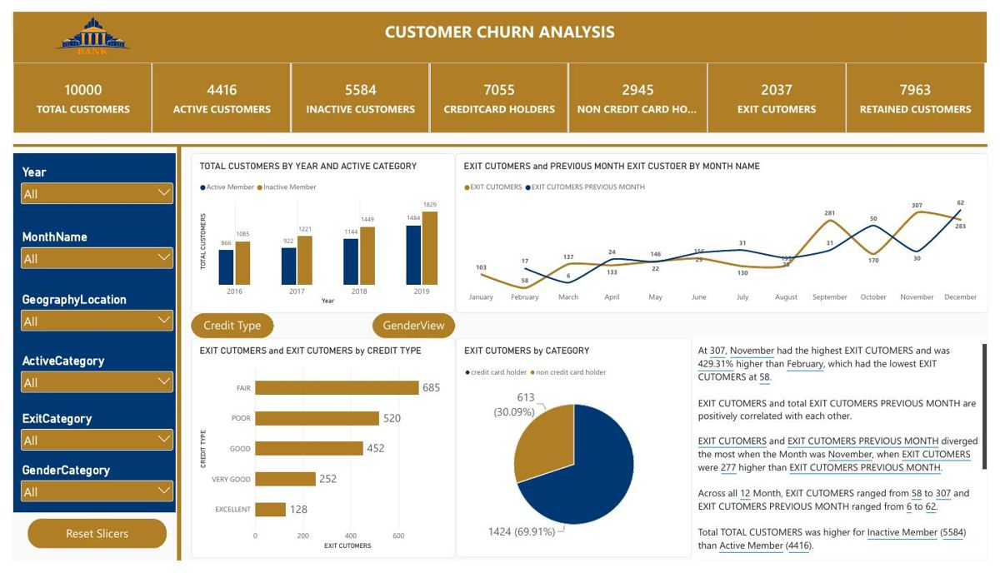
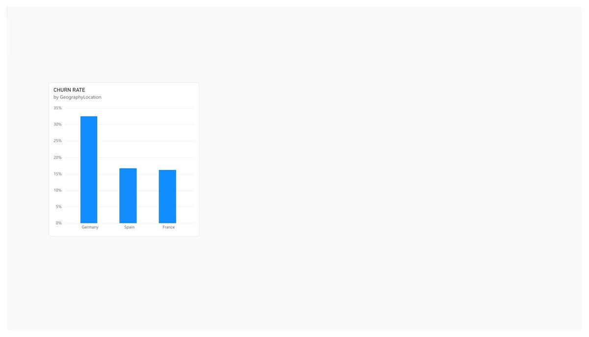
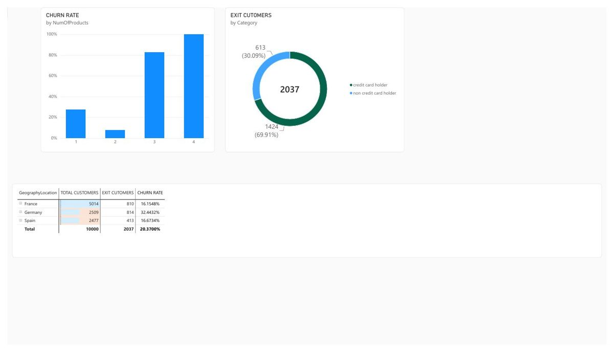

1. Business Problem
A bank wanted to understand which customer segments were most likely to close their accounts (churn). The goal was to identify patterns in customer demographics and behaviour that were associated with higher churn rates, so that the business could investigate targeted retention strategies for the highest-risk segments.
Key Business Questions
- What is the overall churn rate, and how does it vary by country?
- Which age groups show the highest churn rates?
- Does the number of products a customer holds affect their likelihood of churning?
- How does activity status (active vs. inactive) relate to churn?
- Are there month-over-month patterns in customer exits?
2. Dataset Overview
The dataset contains records for 10,000 bank customers across three countries: France, Germany, and Spain. Each record includes demographic information, account details, and a churn indicator.
| Column | Description | Type |
|---|---|---|
| CustomerID | Unique customer identifier | Integer |
| Surname | Customer surname (excluded from analysis) | Text |
| CreditScore | Customer credit score | Integer |
| Geography | Country: France, Germany, or Spain | Text |
| Gender | Male or Female | Text |
| Age | Customer age in years | Integer |
| Tenure | Years as a customer (0–10) | Integer |
| Balance | Account balance | Decimal |
| NumOfProducts | Number of bank products held (1–4) | Integer |
| HasCrCard | Whether the customer holds a credit card (0/1) | Binary |
| IsActiveMember | Whether the customer is an active member (0/1) | Binary |
| EstimatedSalary | Estimated annual salary | Decimal |
| Exited | Churn indicator: 1 = churned, 0 = retained | Binary |
Exited = 1) if they closed their account during the observation period. This is a binary classification based on a point-in-time snapshot; the dataset does not record when exactly within the observation period the exit occurred.3. Data Quality Checks
I profiled and validated the dataset in SQL before loading it into Power BI.
Checks Performed
- Checked for NULL values across all 14 columns — none found.
- Verified CustomerID uniqueness: confirmed 10,000 unique customer records with no duplicates.
- Validated
CreditScorerange: all values fell within the expected 300–850 band. - Validated
Age: all values were between 18 and 92 (plausible for bank customers). - Checked
NumOfProducts: values ranged from 1 to 4 as expected. - Verified
Geography: only three values present — France, Germany, Spain. - Confirmed binary columns (
HasCrCard,IsActiveMember,Exited) contained only 0 and 1 values.
-- Check for NULLs across all key columns
SELECT
SUM(CASE WHEN CustomerID IS NULL THEN 1 ELSE 0 END) AS null_customer,
SUM(CASE WHEN CreditScore IS NULL THEN 1 ELSE 0 END) AS null_credit,
SUM(CASE WHEN Geography IS NULL THEN 1 ELSE 0 END) AS null_geo,
SUM(CASE WHEN Age IS NULL THEN 1 ELSE 0 END) AS null_age,
SUM(CASE WHEN NumOfProducts IS NULL THEN 1 ELSE 0 END) AS null_products,
SUM(CASE WHEN Exited IS NULL THEN 1 ELSE 0 END) AS null_exited
FROM bank_customers;
-- Validate CreditScore range
SELECT
MIN(CreditScore) AS min_score,
MAX(CreditScore) AS max_score
FROM bank_customers;
-- Expected: min >= 300, max <= 850
-- Check for duplicate CustomerIDs
SELECT CustomerID, COUNT(*) AS cnt
FROM bank_customers
GROUP BY CustomerID
HAVING COUNT(*) > 1;4. SQL Analysis
I used SQL to calculate the core churn metrics and segment breakdowns that feed the Power BI report.
Overall Churn Rate
SELECT
COUNT(*) AS total_customers,
SUM(Exited) AS churned_customers,
COUNT(*) - SUM(Exited) AS retained_customers,
ROUND(SUM(Exited) * 100.0 / COUNT(*), 2) AS churn_rate_pct
FROM bank_customers;Churn by Geography
SELECT
Geography,
COUNT(*) AS total_customers,
SUM(Exited) AS churned,
ROUND(SUM(Exited) * 100.0 / COUNT(*), 2) AS churn_rate_pct
FROM bank_customers
GROUP BY Geography
ORDER BY churn_rate_pct DESC;Churn by Number of Products
SELECT
NumOfProducts,
COUNT(*) AS total_customers,
SUM(Exited) AS churned,
ROUND(SUM(Exited) * 100.0 / COUNT(*), 2) AS churn_rate_pct
FROM bank_customers
GROUP BY NumOfProducts
ORDER BY NumOfProducts;Churn by Age Group
SELECT
CASE
WHEN Age < 30 THEN 'Under 30'
WHEN Age BETWEEN 30 AND 44 THEN '30 to 44'
WHEN Age BETWEEN 45 AND 59 THEN '45 to 59'
ELSE '60 and above'
END AS age_group,
COUNT(*) AS total_customers,
SUM(Exited) AS churned,
ROUND(SUM(Exited) * 100.0 / COUNT(*), 2) AS churn_rate_pct
FROM bank_customers
GROUP BY
CASE
WHEN Age < 30 THEN 'Under 30'
WHEN Age BETWEEN 30 AND 44 THEN '30 to 44'
WHEN Age BETWEEN 45 AND 59 THEN '45 to 59'
ELSE '60 and above'
END
ORDER BY churn_rate_pct DESC;5. Data Model & Relationships
The dataset is a single flat table (bank_customers). In Power BI, I created a separate Date Table to enable time intelligence calculations and connected it to a derived date field.
bank_customers (fact) → Date Table (date dimension)
Calculated columns were added for Age Group and Churn Label to support slicers and visual grouping.
Calculated Columns (Power BI)
-- Age group column
Age Group =
SWITCH(TRUE(),
bank_customers[Age] < 30, "Under 30",
bank_customers[Age] < 45, "30 to 44",
bank_customers[Age] < 60, "45 to 59",
"60 and above"
)
-- Churn label
Churn Status =
IF(bank_customers[Exited] = 1, "Churned", "Retained")6. KPI Definitions
All KPIs were defined as DAX measures for consistency across the dashboard.
Total Customers = COUNTROWS(bank_customers)
Churned Customers = CALCULATE([Total Customers], bank_customers[Exited] = 1)
Retained Customers = CALCULATE([Total Customers], bank_customers[Exited] = 0)
Churn Rate % = DIVIDE([Churned Customers], [Total Customers], 0)
Active Customers = CALCULATE([Total Customers], bank_customers[IsActiveMember] = 1)
Inactive Customers = CALCULATE([Total Customers], bank_customers[IsActiveMember] = 0)7. Dashboard Screenshots



8. Key Findings
Overall Churn
2,037 of the 10,000 customers in the dataset had churned, giving an overall churn rate of 20.37%.
Churn by Geography
Germany recorded a notably higher churn rate than France and Spain in the analysed dataset. Germany also had a smaller customer base than France, which may contribute to the higher percentage.
Churn by Number of Products
Customers holding three or four products showed a disproportionately high churn rate (>80%). However, these groups represent a much smaller share of the total customer base than the one- and two-product groups. The pattern is unusual and may reflect specific product or service issues that warrant further investigation.
Activity Status and Churn
Inactive members showed a higher churn rate than active members in the dataset. This pattern is consistent with the expectation that customers who are not actively using their accounts may be more likely to close them.
November Exit Peak
November recorded the highest number of customer exits (307) in the analysed period. This is a descriptive observation; the dataset does not provide enough information to explain why exits were higher in November.
9. Observations & Next Steps
The following observations are based on the analysis and represent areas the business could investigate further.
- The higher churn rate in Germany could justify a country-specific investigation into product satisfaction, pricing, or competitive factors in the German market.
- The very high churn rate among customers holding three or four products is counterintuitive and should be examined closely. It may indicate that customers who hold more products are experiencing friction or dissatisfaction that the data alone cannot explain.
- Inactive members as a segment could be a priority for re-engagement campaigns, given their higher observed churn rate.
- A month-over-month tracking dashboard could help the business monitor whether retention strategies are having an effect over time.
- Further analysis could incorporate qualitative data (such as customer complaints or support interactions) to help explain the patterns observed here.
10. Project Limitations
This project was published in Power BI Service. A GitHub repository link is not available for this project.
Project Limitations
- The dataset is a publicly available simulated banking dataset. It may not reflect the complexity or nuance of real bank customer data.
- The dataset is a point-in-time snapshot; it does not include when within the observation period each customer exited.
- Churn is defined purely as
Exited = 1. The dataset does not record why customers left. - The analysis identifies correlations between customer attributes and churn, but does not establish causation.
- Findings for customers holding 3–4 products are based on smaller sub-groups and should be interpreted with caution.
- No predictive model was built. This is a descriptive analysis only.